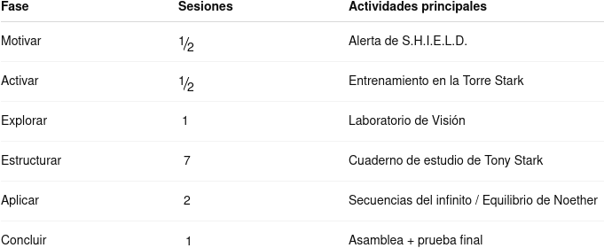

Justificación didáctica
Esta situación de aprendizaje (SdA), desarrollada bajo el marco normativo de la LOMLOE para Andalucía, se fundamenta en los siguientes principios pedagógicos:
- Aprendizaje significativo: los contenidos se vinculan a contextos cercanos y reconocibles.
- Enfoque competencial: el alumnado aplica los saberes matemáticos para analizar, modelizar y resolver problemas reales.
Metodologías activas:
- ABP, mediante un producto final auténtico.
- Gamificación, a través del uso de narrativas (en este caso de los Vengadores) para aumentar la motivación intrínseca.
- Aprendizaje cooperativo, favoreciendo la inclusión y la interacción.
- Evaluación formativa, con autoevaluación, coevaluación y rúbricas claras.
🌍 Objetivos de Desarrollo Sostenible trabajados
- ODS 4 – Educación de calidad: Se promueve un aprendizaje inclusivo, equitativo y significativo.
- ODS 5 – Igualdad de género: Se visibiliza la figura de Emmy Noether, reflexionando sobre el papel de la mujer en la ciencia.

Temporización

Producto final
El producto final, “Las secuencias del infinito en mi mundo”, consiste en una presentación individual donde el alumnado:
- Identifica una progresión real.
- Analiza su comportamiento matemático.
- Justifica los cálculos realizados.
- Reflexiona sobre la utilidad de las matemáticas.
Este producto permite evaluar de forma integrada razonamiento matemático, competencia digital, comunicación y pensamiento crítico, constituyendo una evidencia clara del aprendizaje competencial.
Rúbrica de coevaluación de la presentación al resto de la clase del producto final
| 4 Excelente | 3 Satisfactorio | 2 Mejorable | 1 Insuficiente | |
|---|---|---|---|---|
| Habla | Habla despacio y con gran claridad. (4) | La mayoría del tiempo, habla despacio y con claridad. (3) | Unas veces habla despacio y con claridad, pero otras se acelera y se le entiende mal. (2) | Habla rápido o se detiene demasiado a la hora de hablar. Además su pronunciación no es buena. (1) |
| Vocabulario | Usa vocabulario apropiado para la audiencia. Aumenta el vocabulario de la audiencia definiendo las palabras que podrían ser nuevas para ésta. (4) | Usa vocabulario apropiado para la audiencia. Incluye 1-2 palabras que podrían ser nuevas para la mayor parte de la audiencia, pero no las define. (3) | Usa vocabulario apropiado para la audiencia. No incluye vocabulario que podría ser nuevo para la audiencia. (2) | Usa varias (5 o más) palabras o frases que no son entendidas por la audiencia. (1) |
| Volumen | El volumen es lo suficientemente alto para ser escuchado por todos los miembros de la audiencia a través de toda la presentación. (4) | El volumen es lo suficientemente alto para ser escuchado por todos los miembros de la audiencia al menos 90% del tiempo. (3) | El volumen es lo suficientemente alto para ser escuchado por todos los miembros de la audiencia al menos el 80% del tiempo. (2) | El volumen con frecuencia es muy débil para ser escuchado por todos los miembros de la audiencia. (1) |
| Comprensión | El estudiante puede con precisión contestar casi todas las preguntas planteadas sobre el tema por sus compañeros de clase. (4) | El estudiante puede con precisión contestar la mayoría de las preguntas planteadas sobre el tema por sus compañeros de clase. (3) | El estudiante puede con precisión contestar unas pocas preguntas planteadas sobre el tema por sus compañeros de clase. (2) | El estudiante no puede contestar las preguntas planteadas sobre el tema por sus compañeros de clase. (1) |
| Postura del cuerpo y contacto visual | A la hora de hablar la postura y el gesto son muy adecuados. Mira a todos los compañeros con total naturalidad. (4) | La mayoría del tiempo la postura y el gesto son adecuados y casi siempre mira a los compañeros mientras habla. (3) | Algunas veces, mantiene la postura y el gesto adecuados, y otras no. En ocasiones mira a sus compañeros. (2) | No mantiene la postura y gesto propios de una exposición oral y, la mayoría de las veces, no mira a sus compañeros. (1) |
| Contenido | Demuestra un completo entendimiento del tema que expone. (4) | Demuestra un buen entendimiento del tema que expone. (3) | Demuestra un buen entendimiento de partes del tema que expone. (2) | No parece entender muy bien el tema que expone. (1) |
- Actividad
- Nombre
- Fecha
- Puntuación
- Notas
- Reiniciar
- Imprimir
- Aplicar
- Ventana nueva
Rúbrica de Evaluaión del producto final por parte del profesorado
| 5 Excelente | 4 Notable | 3 Adecuado | 2 Básico | 1 Inicial | |
|---|---|---|---|---|---|
| MAT.3.2.1 – Corrección matemática | Cálculos correctos, razonados y justificados con total claridad (2.5) | Cálculos correctos con pequeñas imprecisiones no significativas (1.75) | Cálculos básicos correctos, justificación parcial (1.25) | Errores frecuentes, comprensión limitada (0.75) | No comprende ni aplica correctamente los conceptos (0.1) |
| MAT.3.4.2 – Modelización y uso de patrones | Identifica y modeliza con autonomía y precisión (2.5) | Identifica correctamente y modeliza con apoyo (1.75) | Identificación básica del patrón (1.25) | Dificultades claras en la modelización (0.75) | No identifica el tipo de progresión (0.1) |
| MAT.3.6.3 – Conexión con la realidad | Relación profunda y reflexiva con la realidad (2.5) | Relación clara y coherente (1.75) | Relación simple (1.25) | Relación poco justificada (0.75) | No establece relación (0.1) |
| MAT.3.9.2 – Actitud y perseverancia | Actitud excelente, reflexiva y perseverante (2.5) | Actitud positiva y constante (1.75) | Actitud adecuada (1.25) | Falta de constancia (0.75) | Actitud negativa o pasiva (0.1) |
- Actividad
- Nombre
- Fecha
- Puntuación
- Notas
- Reiniciar
- Imprimir
- Aplicar
- Ventana nueva
Atención a la diversidad y DUA
La SdA se diseña bajo los principios del Diseño Universal para el Aprendizaje (DUA):
- Múltiples formas de representación:
- Uso de narrativas, gráficos, ejemplos reales y visuales.
- Apoyo visual y esquemas para alumnado con dificultades de comprensión.
- Múltiples formas de acción y expresión:
- Posibilidad de presentar el producto final en distintos formatos.
- Uso de herramientas digitales para facilitar la expresión.
- Múltiples formas de implicación:
- Gamificación y narrativa para aumentar la motivación.
- Trabajo cooperativo con roles diferenciados.
Se aplicarán medidas ordinarias de atención a la diversidad, adaptando ritmos, apoyos y niveles de profundización según las necesidades del alumnado.